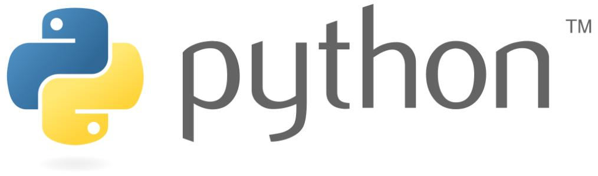

Python 简介

Python 简介
Python 是一个高层次的结合了解释性、编译性、互动性和面向对象的脚本语言。
Python 的设计具有很强的可读性，相比其他语言经常使用英文关键字，其他语言的一些标点符号，它具有比其他语言更有特色语法结构。
- Python 是一种解释型语言： 这意味着开发过程中没有了编译这个环节。类似于PHP和Perl语言。
- Python 是交互式语言： 这意味着，您可以在一个 Python 提示符
>>>后直接执行代码。
- Python 是面向对象语言: 这意味着Python支持面向对象的风格或代码封装在对象的编程技术。
- Python 是初学者的语言：Python 对初级程序员而言，是一种伟大的语言，它支持广泛的应用程序开发，从简单的文字处理到 WWW 浏览器再到游戏。
Python 发展历史
Python 是由 Guido van Rossum 在八十年代末和九十年代初，在荷兰国家数学和计算机科学研究所设计出来的。
Python 本身也是由诸多其他语言发展而来的,这包括 ABC、Modula-3、C、C++、Algol-68、SmallTalk、Unix shell 和其他的脚本语言等等。
像 Perl 语言一样，Python 源代码同样遵循 GPL(GNU General Public License)协议。
现在 Python 是由一个核心开发团队在维护，Guido van Rossum 仍然占据着至关重要的作用，指导其进展。
Python 2.0 于 2000 年 10 月 16 日发布，增加了实现完整的垃圾回收，并且支持 Unicode。
Python 3.0 于 2008 年 12 月 3 日发布，此版不完全兼容之前的 Python 源代码。不过，很多新特性后来也被移植到旧的Python 2.6/2.7版本。
Python 3.0 版本，常被称为 Python 3000，或简称 Py3k。相对于 Python 的早期版本，这是一个较大的升级。
Python 2.7 被确定为最后一个 Python 2.x 版本，它除了支持 Python 2.x 语法外，还支持部分 Python 3.1 语法。
Python 特点
- 1.易于学习：Python有相对较少的关键字，结构简单，和一个明确定义的语法，学习起来更加简单。
- 2.易于阅读：Python代码定义的更清晰。
- 3.易于维护：Python的成功在于它的源代码是相当容易维护的。
- 4.一个广泛的标准库：Python的最大的优势之一是丰富的库，跨平台的，在UNIX，Windows和Macintosh兼容很好。
- 5.互动模式：互动模式的支持，您可以从终端输入执行代码并获得结果的语言，互动的测试和调试代码片断。
- 6.可移植：基于其开放源代码的特性，Python已经被移植（也就是使其工作）到许多平台。
- 7.可扩展：如果你需要一段运行很快的关键代码，或者是想要编写一些不愿开放的算法，你可以使用C或C++完成那部分程序，然后从你的Python程序中调用。
- 8.数据库：Python提供所有主要的商业数据库的接口。
- 9.GUI编程：Python支持GUI可以创建和移植到许多系统调用。
- 10.可嵌入: 你可以将Python嵌入到C/C++程序，让你的程序的用户获得"脚本化"的能力。
Python的优缺点
Python的优点
- 简单和明确，做一件事只有一种方法。
- 学习曲线低，跟其他很多语言相比，Python更容易上手。
- 开放源代码，拥有强大的社区和生态圈。
- 解释型语言，天生具有平台可移植性。
- 支持两种主流的编程范式（面向对象编程和函数式编程）都提供了支持。
- 可扩展性和可嵌入性，可以调用C/C++代码，也可以在C/C++中调用Python。
Python的缺点
- 执行效率稍低，因此计算密集型任务可以由C/C++编写。
- 代码无法加密，但是现在很多公司都不销售卖软件而是销售服务，这个问题会被淡化。
- 在开发时可以选择的框架太多（如Web框架就有100多个），有选择的地方就有错误。
Python 应用
- Youtube - 视频社交网站
- Reddit - 社交分享网站
- Dropbox - 文件分享服务
- 豆瓣网 - 图书、唱片、电影等文化产品的资料数据库网站
- 知乎 - 一个问答网站
- 果壳 - 一个泛科技主题网站
- Bottle - Python微Web框架
- EVE - 网络游戏EVE大量使用Python进行开发
- Blender - 使用Python作为建模工具与GUI语言的开源3D绘图软件
- Inkscape - 一个开源的SVG矢量图形编辑器。